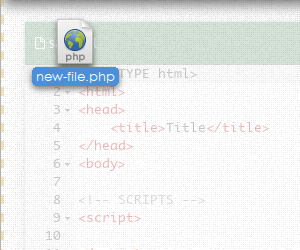
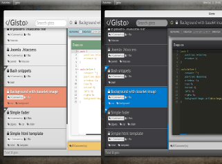
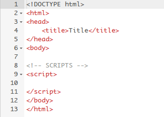
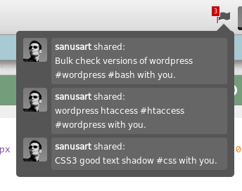
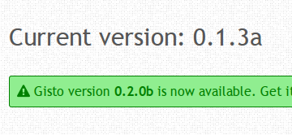

GitHub Integration

Gisto works on GitHub infrastructure, everything you do at Gisto is automatically updated at GitHub.
If you don't have access to your computer you can browse normally at GitHub to get all you need.
Gist tagging

Gisto allows to tag each gist with unlimited number of tags.
Tags can be used for simply sorting gist snippets into groups for what makes it easy to search and maintain.
Quick Editing

Gisto contains rich code editors, for editing on the go just when you need that quick change and don't want to open your development environment.
Drag and drop support for files right inside Gisto! just drag files to the application to create a gist.
Search

Gists can be filtered by search filter from within the application.
Searching criteria may be gist's description, file name / extention, tag or by public/secret status of a gist.
Drag & Drop
Files can be dragged into Gisto from your desktop and dropped inside the gist - this will add the file to gist.
Color themes
Several color themes available in dark and light flavors.
Open gist with ...

Open gist on gist.github.com, copy file from a gist to clipboard, Copy <embed> code to clipboard, open gist in plunker and more...
Great editor
Thanks to ACE editor - gist files can be highlighted and dome aspects of the editor can be changed via settings.
Share gist
Send gist between Gisto installations, users with Gisto will be notified and be able to fork or preview sent gist.
Update Notifier
Update notifier will let you know if there is a new version of Gisto.